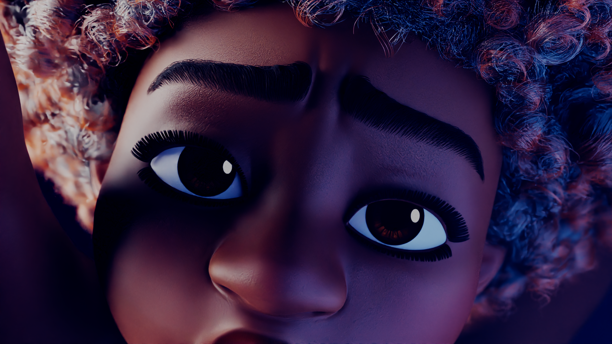
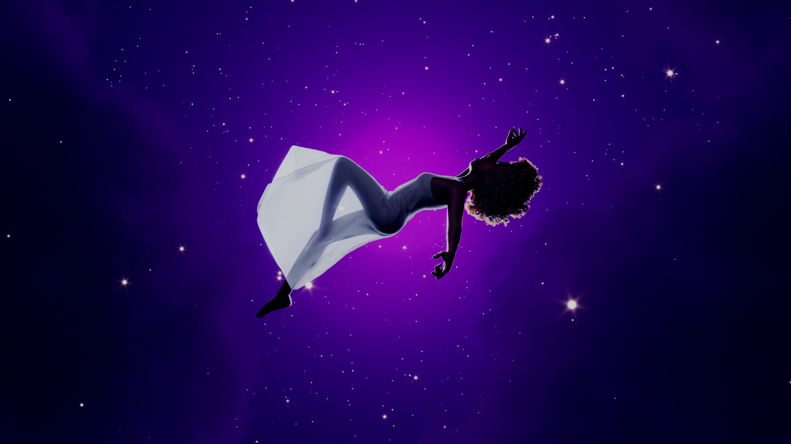

New Beginning
An experimental 3D animated musical short — directed, animated, and produced by Temitope Falade.
Project Overview
New Beginning is a short 3D animated musical film created as an experimental and technical collaboration between three artists. Serving as both a creative exploration and a technical challenge, the project focuses on emotional storytelling through music, performance, and evolving visual symbolism.
The story follows a young woman processing heartbreak after her relationship ends. Through her song, also titled "New Beginning," she gradually finds healing, hope, and self-renewal. The project merges cinematic animation, musical rhythm, and symbolic environmental storytelling to create an emotionally resonant experience.
I directed the project and contributed extensively to animation, environment creation, simulations, VFX, and overall visual direction. Despite being a zero-budget production, the film achieved a polished look and served as a major milestone in refining my skills as a CG Generalist and Technical Artist.
Narrative Concept
The animation begins in a somber tone — the protagonist performs her song alone on a dimly lit stage surrounded by a lifeless, dull-colored garden. As the song progresses, subtle visual transformations unfold: leaves regrow, flowers bloom, and color gradually returns to the world around her.
This progressive change mirrors the emotional arc of the story, from sorrow and loss to acceptance and renewal. By the final chorus, the once-dead garden has become lush and radiant, symbolizing her emotional rebirth and the start of a new beginning.
Between her stage performances, the film intersperses visual metaphors inspired by specific lyrical moments — a glass heart shattering, her body fading to dust, literally flying through a bubble world — visually representing the poetic imagery of the song.
Creative & Visual Direction
- Tone & Atmosphere: A balance of melancholy and hope conveyed through gradual visual transitions and dynamic lighting.
- Environment Design: A transforming garden that evolves in color, light, and life throughout the song to symbolize emotional healing.
- Character Performance: Subtle facial animations and expressive body language tracking the protagonist's emotional progression.
- Visual Metaphors: Intercut dream-like sequences reinforcing key lyrical moments for emotional emphasis and narrative rhythm.
- Music Integration: Animation pacing and transitions synchronized with the structure and tone of the original track.
Production & Technical Execution
- Role: Director, Lead Animator, CG Generalist, Technical Artist.
- Software: Autodesk Maya (animation), VRay (rendering), XGen (hair simulation), nCloth (cloth simulation).
- Directed the film and supervised creative decisions across all departments.
- Animated the majority of the shots and choreographed character performance.
- Created most environments and handled scene composition and lighting.
- Simulated hair with XGen and cloth with nCloth, ensuring natural, responsive motion.
- Implemented volumetric lighting and VFX to establish emotional tone and visual depth.
- Oversaw final render setup and post-processing pipeline.
Team Contributions
- Dawn Eloviano: Song writer, composer, and vocalist.
- Fagbowore Damilola: Character modeling, cloth modeling, texturing, hair grooming, and garden environment design.
- Adeosun Olumide: Assisted with animation of selected shots and final rendering via personal render farm.
- Kolade Tijani: Character rigging.
- Sefchol: Original beat composer.
- Osazie Igodan: Sound design and musical production.
- Olumuyiwa Charles: Motion Graphics.
Technical & Artistic Highlights
- Directed and produced a full 3D animated musical short from concept to final render.
- Integrated hair and cloth simulations for realism and expressive motion.
- Created a progressively changing environment driven by narrative tone and musical timing.
- Designed volumetric and emotional lighting setups to support storytelling mood.
- Balanced symbolism and realism, merging lyrical metaphor with visual narrative.
- Optimized render pipeline with VRay for cinematic results under zero-budget constraints.
Reflection
New Beginning stands as both a creative and technical achievement — a proof of concept for blending music, narrative emotion, and evolving 3D environments into one cohesive visual story.
As director and lead CG artist, I gained invaluable experience in story-driven animation, complex simulation workflows, and collaborative production management. Beyond its emotional core, the project embodies the spirit of experimentation and resourcefulness — creating something visually and emotionally rich with limited resources.
Screenshots



